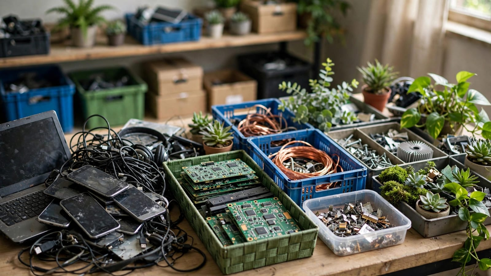

Why Sustainable Technology Matters
Environmental
Cleaner technologies can help reduce pollution, resource consumption, and waste.
Economic
Efficient systems can reduce operating costs and create new industries and opportunities.
Social
Sustainable innovation can improve access to energy, transportation, information, and essential services.
Technology Is Not Automatically Sustainable
The environmental and social effects of a technology depend on how it is designed, produced, used, and managed.

E-Waste
Rapid replacement of electronic devices can create large amounts of electronic waste.
Raw Materials
Many technologies require minerals and materials that must be responsibly sourced and managed.
Accessibility
Sustainable technologies need to become accessible and practical for different communities.
From Design to Recycling
Design
Think about durability, repairability, and resource use before manufacturing begins.
Production
Reduce energy use, pollution, and waste during manufacturing.
Use
Encourage efficient operation and longer product lifetimes.
End of Life
Repair, reuse, recover, and recycle materials whenever practical.